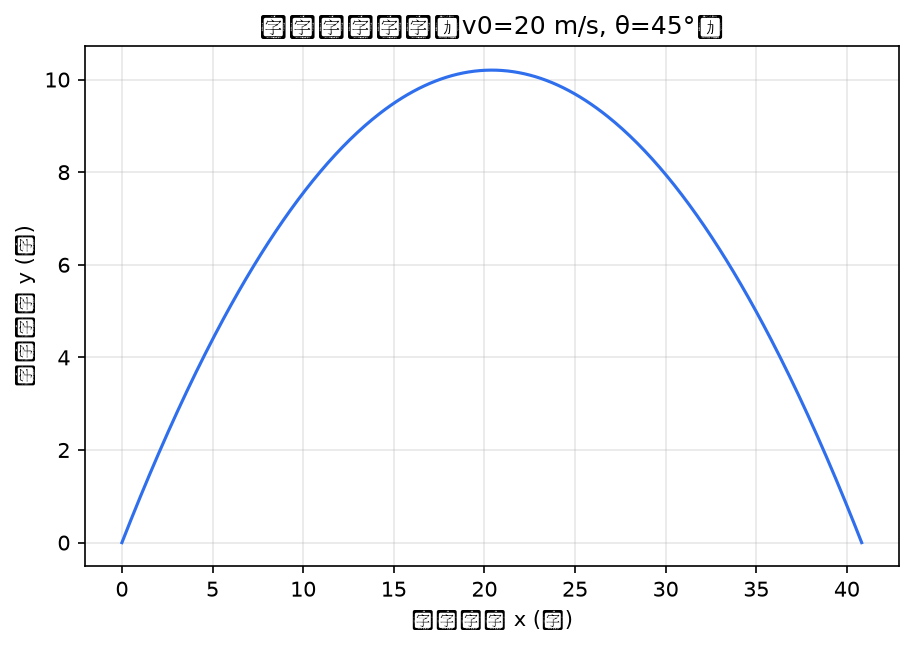
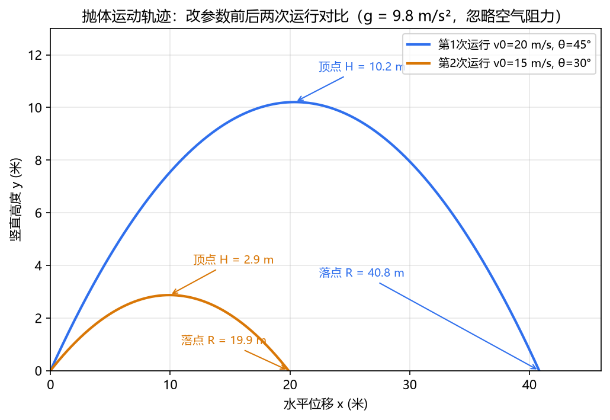

第 14 讲 代码、网页与小程序：零基础 AI 开发
"会创作"阶段的收官站：代码由 AI 写，判断力由你练。本讲不教编程语法，只教你两件事——把需求说清楚，把结果验收好。
一、本讲学习目标
完成本讲后，你应该能够：
- 说出 AI 编程（AI Coding）的三个阶段——Tab 补全、AI 辅助编程、AI 自主编程（Vibe Coding（自主编程））——各自的分工，并理解"三种功能共存"；
- 用"需求描述三要素"（输入是什么 / 输出是什么 / 交互长什么样）把一个开发需求写成 AI 能执行的说明；
- 完整走一遍 AI 开发循环：说清需求 → 生成 → 运行 → 把报错原文贴回 → 迭代；
- 用物理公式（射程、最大高度）对拍验收 AI 产出的图表，体会"验收能力比编程能力更重要"；
- 产出小组的项目展示网页与至少一个可运行的交互小工具。
二、课前准备
- 无需编程基础，也无需安装编程软件：机房有浏览器即可。本课继续使用第 8 讲认识的 AI Agent（智能体）替你生成与运行代码——你负责指挥与验收。
- 回顾第 8 讲的 Agent 工作三阶段（收集上下文 → 采取行动 → 验证结果），本讲要把它们串成一个"开发循环"。
- 小组带齐前几讲的项目素材：核心文本（第 11 讲）、图像（第 12 讲）、短视频（第 13 讲）、数据与图表（第 10 讲）——本讲要给它们搭一个"家"（项目展示网页）。
- 想一想：你在电脑上见过哪些"报错"？把印象最深的一次记下来（红色弹窗、一屏英文都算），课堂要用。
- 微信小程序部分仅教师机演示，学生无需安装任何工具。
三、核心概念精讲
1. 导入：AI Coding 的三个阶段
先解决一个认知问题：AI 帮人写代码，是从什么时候开始的？2025 年前后的 AI Coding 可概括为三个演变阶段：
| 阶段 | AI 做什么 | 你做什么 | 代表工具 |
|---|---|---|---|
| ① Tab 补全 | 根据你当前的输入，预测接下来的内容：输入 1+2+3+ 之后按 Tab，AI 自动补出 4 | 逐行自己写，AI 跟着补 | GitHub Copilot 等 |
| ② AI 辅助编程 | 按你的意图编写或修改部分代码："帮我写一个函数，计算从 1 到正整数 n 的和" | 提出局部需求并逐段把关 | Cursor、Google Antigravity 等 |
| ③ AI 自主编程 | 你只说目标，AI 自己规划并完成整个开发——具体实现细节不用你操心，这就是 Vibe Coding | 说清需求 + 验收成果 | Claude Code、Codex、OpenCode 等（课堂以 ZCode 演示） |
注意两点：第一，三个阶段不是"新一代淘汰老一代"，而是三种功能共存——今天的工具往往同时具备补全、辅助、自主三种能力；第二，本课程自第 8 讲起一直在用的 Agent 正是第三阶段的形态：它把"写代码"还原成了"接任务、交成果"。（课程以 Claude 为例讲解原理，课堂使用 ZCode 演示。）
这份讲义的作者特别提醒：科研刚刚起步的研究生，不建议一上来就用端到端 Agent——因为它"全包"的能力可能诱使人偷懒，减少基础的科研训练（出处同上）。物理班的你怎么看？
- 用 AI 直接背结论 vs 用 AI 帮你推导再核对——哪一种对你这学期的学习更有利？
- 让 Agent 直接生成抛体轨迹图 vs 自己先推导公式、再让 Agent 画图验证——两者的"验收底气"一样吗？
讨论的落点：能验收的前提，是知道"对的应该长什么样"——这正是本讲把物理题放在第一实操的原因。
2. 零基础"代码观光"：程序就是写给计算机的指令
程序（Program）并不神秘：它就是一份写给计算机的指令清单，计算机逐条执行。你最常打交道的有两类指令文件：HTML——网页的"骨架"，浏览器读它来显示页面；Python——做计算与绘图的"脚本"。下面各花 5 分钟"观光"：只看长什么样、运行结果是什么，不学语法、不要求记住。
<!DOCTYPE html>
<html>
<head><title>单摆周期实验</title></head>
<body>
<h1>单摆周期实验</h1>
<p>摆长 L = 1.0 m 时，周期 T ≈ 2.0 s。</p>
</body>
</html>逐行一句话说明——它是什么：
| 行 | 这一行是什么 |
|---|---|
| 1 | 声明"这是一张网页"，就像实验报告封面的"文档类型"栏 |
| 2 | 整张网页从这里开始 |
| 3 | "头部"部分：浏览器标签页上显示的标题——它不显示在页面正文中 |
| 4 | "身体"部分开始：页面里能看见的内容从这里放 |
| 5 | 一个大标题（相当于实验报告的题目字号） |
| 6 | 一段正文文字 |
| 7–8 | 身体和网页各自"收尾"——指令清单要有始有终 |
运行结果：把这段文字存成 pendulum.html，双击用浏览器打开——你会看到一个标题为"单摆周期实验"的网页，页面中央有大标题和那句话。顺带一提，这句话本身也经过了"对拍"：由单摆周期公式 T = 2π√(L/g)，L 取 1.0 m、g 取 9.8 m/s² 时，T ≈ 2.0 s。
g = 9.8 # 重力加速度，单位 m/s²
v0 = 10 # 初速度，单位 m/s
t = 1.0 # 时刻，单位 s
y = v0 * t - 0.5 * g * t**2 # 竖直上抛的高度公式
print("1 秒末的高度 =", y, "米")逐行一句话说明——它是什么：
| 行 | 这一行是什么 |
|---|---|
| 1 | 告诉计算机："记一个数叫 g，它是 9.8"——相当于给物理量起名字 |
| 2 | 同上：起名叫 v0 的数是 10（竖直上抛的初速度） |
| 3 | 起名叫 t 的数是 1.0（我们问 1 秒末的情况） |
| 4 | 按物理公式 h = v₀t − ½gt² 算出高度 y——写法略有不同，物理含义完全一致 |
| 5 | 把结果"打印"到屏幕上（相当于计算机的"朗读"） |
运行结果：屏幕上显示一行字——"1 秒末的高度 = 5.1 米"（10×1 − 0.5×9.8×1² = 10 − 4.9 = 5.1）。网页文件双击就能打开；Python 文件则需要运行环境——本课由 Agent 替你运行，你只需要看运行结果。
观光结束。看不懂语法完全没关系——Vibe Coding 时代，这些指令清单由 AI 替你写。你要练的是另外两样：把需求说清楚（下一节），把结果验收好（第四部分的案例会示范）。
3. AI 开发循环：五步走
第 8 讲讲过 工具调用的三步：模型决策 → 程序执行 → 结果回传。把这套机制用在"开发一个程序"上，就是一个反复转动的五步循环：
| 步骤 | 谁来做 | 具体做什么 | 对应第 8 讲三阶段 |
|---|---|---|---|
| ① 说清需求 | 你 | 用三要素模板（见下）把任务讲明白 | 收集上下文：你的描述与项目文件就是上下文 |
| ② 生成 | AI | 写出或修改程序文件 | 采取行动 |
| ③ 运行 | AI 或你 | 跑一次，看结果或看报错 | 采取行动 |
| ④ 报错原文贴回 | 你 | 运行不顺时，把完整报错复制贴回给 AI | 回到"收集上下文"：报错原文是最有价值的上下文 |
| ⑤ 迭代 | 人机各半 | 验收通过 → 进入下一个需求；没通过 → 继续修 | 验证结果：AI 可以跑测试，但"结果对不对"最终由你判断 |
循环里最容易被小看的是第①步。Agent 开发的心法：把需求说清，让 Agent 自主完成，你负责验证。对零基础的你，需求只要说清三件事：
- 输入是什么——程序要"吃"进什么数据或参数？（例：初速度与抛射角）
- 输出是什么——程序要"吐"出什么成果？长什么样？（例：一张标注了物理量与单位的轨迹图 PNG）
- 交互长什么样——以后怎么重复使用它？（例：每次只改两个数字，重新运行就出新图）
它就是第 4 讲"具体明确 + 规定输出"两大基本功在开发场景的升级版，也和第 9 讲的指令三要素一脉相承。三个要素写全，AI 的自由发挥就被框在了你验收得了的范围内。
- 复制完整报错——从第一行到最后一行，英文、符号都不要漏，不要只截一半；
- 原样贴回给 Agent；
- 描述你刚才做了什么——一句话即可（"我把 v0 改成 25 之后运行"）；
- 让它修。
仍然不行：把你手上最后一版文件连同报错一起贴回，让 Agent 从头看一遍。记住：报错是给 AI 看的"病历"，不是给你的"判决书"——你看不懂没关系，复制粘贴总会吧？
4. 给 AI 配"实验室"：沙箱、文件窗口与"技能=插件"
前面所有演示里，AI 写的程序在哪儿运行？常见有三种安排：①你本机——第 10、11 讲的 ZCode 直接在你的电脑上读写文件、运行命令；②网页版 AI 助手内置的执行环境；③开发者通过程序接口（API）远程使用的执行环境。第②③种有个共同的名字，值得认识一下。
代码执行工具 = 给 AI 配一台与外界隔离的"实验电脑"。这台"实验电脑"就是沙箱（Sandbox）。它的两个特点，用过实验室设备的你一听就懂：
- 资源受限：内存、磁盘、CPU 都有配额，像实验室电源限流限压——再怎么折腾也不会烧线路；
- 与外界隔离：它默认被关在"罩子"里，不能随便触碰外部世界（不同产品的联网与权限细节各不相同，以官方文档为准），就像激光实验被罩在防护罩内——功率受限、出不了光路，因此更安全。
对课程的意义：Agent 在沙箱里读写文件、运行代码，无论怎么"翻车"，都不会伤到你的电脑。第 8 讲的"最小授权"原则，在这里由环境本身替你兜了一层底。
Files API = 文件的存取窗口。沙箱既然隔离了，文件怎么进出？走"窗口"：把素材（实验数据、讲义 PDF）上传进去，让 AI 在沙箱里处理，再把成品（图表、报告、幻灯片）取回来。像实验室的样品传递窗：两边的人不能直接伸手进对方房间，但样品能安全地递进递出，而且每次进出都有记录可查。
"技能 = 插件"哲学。第 5 讲的提示词卡、第 8 讲的技能（Skill），本质上都在做同一件事：给 AI 装扩展。装上"绘制轨迹图"的扩展，它出图就懂得标注物理量与单位；装上"数据不确定性分析"的扩展，它处理测量数据就按实验物理的规矩来。扩展可以一个一个加装，也可以整包迁移——技能按开放标准组织（一个文件夹加一份说明文件），不绑定任何一家厂商。还记得第 3 讲的渐进式披露吗？插件装得再多，平时常驻的只有名字与一句描述，方法正文接到相关任务才加载——"桌面"（上下文窗口）不会乱。
三件套合起来记：沙箱是"实验电脑"，Files API 是"传递窗"，技能是"装好的实验方法包"。本讲课堂上你的 Agent 在本机工作，沙箱主要出现在云端助手与 API 场景——概念理解即可，具体功能以各平台官方文档为准。
四、物理场景案例演示
下面是本讲实操①的完整需求描述示范——看"三要素"如何落进一段可以直接复制使用的提示词：
请帮我写一个 Python 脚本 projectile.py，绘制抛体运动轨迹并保存为图片。
【输入是什么】脚本开头定义两个变量：初速度 v0（单位 m/s）和抛射角
theta（单位：度），默认 v0 = 20，theta = 45。
【输出是什么】运行后生成轨迹图 trajectory.png：
横轴为水平位移 x（米），纵轴为竖直高度 y（米），
两条坐标轴都要标注物理量与单位；
图题写明所用参数，例如"抛体运动轨迹（v0=20 m/s, θ=45°）"。
【计算要求】重力加速度取 g = 9.8 m/s²，方向竖直向下；
轨迹按 y = x·tanθ − g·x²/(2·v0²·cos²θ) 计算，
x 从 0 取到落地点；忽略空气阻力。
【验收辅助】在图上直接标注顶点（最大高度 H）与落点（射程 R）
的数值；运行时在控制台打印 R 与 H（保留 1 位小数），
便于和公式 v0²sin2θ/g、v0²sin²θ/(2g) 对拍。
【显示要求】图中的中文必须正常显示，不能变成方框
（绘图库默认字体不含中文，需指定中文字体）。
【交互长什么样】以后每次只改脚本开头的 v0 和 theta 两个数字，
重新运行就能得到新图。
写完后请运行一次，把生成的图展示给我；
如果有报错，请把报错原文完整保留在输出里。🧪 查看运行结果（ZCode 实测）
AI Agent 真实执行并生成上述结果（执行环境：GLM+ZCode）。
第一轮运行（按未优化提示词）控制台输出——图保存成功、数值正确，但每写一个中文字就报一条字体警告：
projectile.py:23: UserWarning: Glyph 25243 (\N{CJK UNIFIED IDEOGRAPH-629B}) missing from font(s) DejaVu Sans.
plt.savefig("trajectory.png", dpi=150, bbox_inches="tight")
projectile.py:23: UserWarning: Glyph 20307 (\N{CJK UNIFIED IDEOGRAPH-4F53}) missing from font(s) DejaVu Sans.
……（同类警告共 17 条，图中每个中文字符各一条，此处节选）
已保存 trajectory.png（v0=20 m/s, theta=45°）
射程 R = 40.8 m，最大高度 H = 10.2 m

修复方式：AI 在脚本开头加了两行——plt.rcParams["font.sans-serif"] = ["Microsoft YaHei", "SimHei"] 与 plt.rcParams["axes.unicode_minus"] = False。同时按【验收辅助】给图加上了 H、R 数值标注。修复后两次运行（第二次只改了开头两个数字）：
▶ 第 1 次运行（v0 = 20，theta = 45），控制台输出： 已保存 trajectory.png（v0=20 m/s, theta=45°） 理论值：射程 R = v0²sin2θ/g = 40.8 m；最大高度 H = v0²sin²θ/(2g) = 10.2 m；飞行时间 T = 2.89 s 对拍：曲线顶点在 x=20.4 m 处，y=10.2 m；曲线落点在 x=40.8 m 处，y=0.0 m —— 与理论值一致 ▶ 改参数重跑（只改脚本开头两个数字：v0 = 15，theta = 30）： 已保存 trajectory.png（v0=15 m/s, theta=30°） 理论值：射程 R = v0²sin2θ/g = 19.9 m；最大高度 H = v0²sin²θ/(2g) = 2.9 m；飞行时间 T = 1.53 s 对拍：曲线顶点在 x=9.9 m 处，y=2.9 m；曲线落点在 x=19.9 m 处，y=0.0 m —— 与理论值一致

拆解这条提示词为什么"专业"：
- 输入是什么：给了两个物理量、各自的单位、还有默认值——AI 不用猜"画哪条轨迹"；
- 输出是什么：PNG 图片 + 坐标轴的物理量与单位 + 图题格式——这是物理图表的"作业规范"，也是你的验收清单；
- 计算要求：直接给出轨迹方程并写明 g 取 9.8 m/s²、忽略空气阻力——把物理适用条件写进需求，AI 就没有"自由发挥"的空间；
- 交互长什么样：明确"改两个数重跑"的使用方式——这决定了脚本该怎么组织；
- 最后一句要求运行并展示结果、保留报错原文——验收抓手（第 8 讲的技巧）：出图或报错，都有据可查。
- 【验收辅助】与【显示要求】（两条都是真实运行后回写的）：图上标数值、控制台打印 R 与 H——对拍不用肉眼估读；中文字体这条，是第一轮运行用 17 条字体警告换来的（见上方折叠区）。把可预见的问题提前写进需求，就能省掉一轮"报错贴回"。
这段轨迹方程是怎么来的？由 x = v₀cosθ·t 与 y = v₀sinθ·t − ½gt² 消去时间 t 即得——你力学课已经学过。提示词里的公式你来定，代码 AI 来写：这就是"说清需求"的分工。
取 v₀ = 20 m/s、θ = 45° 时，理论射程 R = v₀²sin2θ/g = 400/9.8 ≈ 40.8 m，最大高度 H = v₀²sin²θ/(2g) = 200/19.6 ≈ 10.2 m。生成的图上，曲线落点应回到 y = 0（约 x ≈ 40.8 m 处），顶点应约在 10.2 m。对得上，图才算对——用独立方法抽查 AI 的结果，这是物理学生的专业优势。本讲演示已完整跑通：上方折叠区里两次运行的实测图，H、R 标注值与这里的理论公式逐一对上；第二组参数 v₀ = 15 m/s、θ = 30° 时 R ≈ 19.9 m、H ≈ 2.9 m，请动手验算一遍。
五、课堂实操任务单
本讲及期末项目中，网页与小工具的评分看两点：能否说清想要什么、能否判断结果对不对。代码由 AI 负责，你不背语法；但"图对不对、换算准不准、页面能不能打开"必须由你验收。
每完成一项，在方框中打勾（勾选状态会自动保存）：
🧪 查看挑战③a 示例成品：物理单位换算器（ZCode 实测）
AI Agent 生成了单位换算器网页（执行环境：GLM+ZCode）。▶ 点击打开生成的换算器网页
功能与界面说明（自上而下）：顶部 6 个类别页签——长度、质量、时间、能量、压强、角度；中间一行控件——数值输入框（支持科学计数法 1.6e-19）、"从单位"与"到单位"两个下拉框、⇄ 交换按钮；数值或单位任一变化，换算结果与大字答案立即更新，下方同步显示换算关系（如"1 电子伏 (eV) = 1.602176634×10⁻¹⁹ 焦耳 (J)"）；底部"▶ 一键对拍"按钮，用 8 组国际定义值逐项核对并显示 ✓（页面打开时自动执行一次）。默认打开正是挑战里举的例子：1 eV → J。对应完成标准的两条——"输入数据能得到结果""用两组已知值对拍通过"——工具直接把对拍做成了内置按钮。
核心 JS 节选：全部换算只靠一张"因子表"——每个单位存一个相对基准单位的倍率，换算 = 数值 × (从单位因子 ÷ 到单位因子)：
const UNITS = {
energy: { name: "能量", base: "J", u: {
"焦耳 (J)": 1, "千焦 (kJ)": 1e3, "电子伏 (eV)": 1.602176634e-19,
"卡路里 (cal)": 4.184, "千瓦时 (kW·h)": 3.6e6, ... } },
angle: { name: "角度", base: "rad", u: {
"弧度 (rad)": 1, "度 (°)": Math.PI / 180, "圈 (rev)": 2 * Math.PI } };
function convert(val, cat, from, to) {
const f = UNITS[cat].u;
return val * f[from] / f[to]; // 先化成基准单位，再换到目标单位
}
Node.js 实测对拍输出（期望值全部来自国际定义，相对误差容限 10⁻¹²）：
类别数：6（长度 / 质量 / 时间 / 能量 / 压强 / 角度） 通过 1 eV → J：算得 1.602176634×10⁻¹⁹（期望 1.602176634×10⁻¹⁹） 通过 1 kW·h → J：算得 3600000（期望 3600000） 通过 1 cal → J：算得 4.184（期望 4.184） 通过 90° → rad：算得 1.570796327（期望 1.570796327） 通过 180° → rad：算得 3.141592654（期望 3.141592654） 通过 1 atm → Pa：算得 101325（期望 101325） 通过 1 mi → m：算得 1609.344（期望 1609.344） 通过 1 lb → kg：算得 0.45359237（期望 0.45359237） 对拍 8 项：通过 8 项，失败 0 项
第 2 节最后 5 分钟为期末交付清单说明：作品集如何打包、含哪些件——请对照第八部分课后作业逐项核对，缺什么当堂补什么。
六、常见坑与翻车案例
- 坑① 需求只说一半："画个抛体轨迹"——AI 自行决定单位、参数与样式，出的图对不上作业要求。解法：三要素模板写全，尤其是"坐标轴标注物理量与单位"这类物理规范。
- 坑② 报错只给一半：只说"报错了，帮我修"或截图截了半屏——AI 只能靠猜，越修越乱。解法：完整复制报错原文贴回 + 描述你做了什么（报错应对四步）。
- 坑③ 跑通了就交差：脚本不报错 ≠ 物理正确——重力加速度写成 98、单位用 cm 却标 m，图照样画得出来。解法：用射程、最大高度等理论值对拍；抽一个数据点手算核对。
- 坑④ 忘了写适用条件：让 AI 画"单摆周期–摆长曲线"，没提"小角度"，AI 直接用 T = 2π√(L/g)——这个公式只在摆角很小时近似成立，大摆角就失真了。解法：把物理近似的适用条件写进需求（"限小角度，sinθ ≈ θ"）。
- 坑⑤ 一次提十个需求：又要好看、又要动画、又要留言板……AI 一次改太多处，出了问题你不知道坏在哪一步。解法：一次一个需求，小步迭代；每步都验收。
- 坑⑥ 打开了旧文件：Agent 明明生成了新页面，你双击的却是别的目录里的旧版本。解法：让 Agent 汇报文件的完整保存路径，按路径打开核对。
七、自测
1. "AI Coding 三阶段"中的第三阶段（Vibe Coding / AI 自主编程）的特点是？
- 按 Tab 键让 AI 补全下一个词
- AI 帮你编写或修改一段代码
- 只说目标，AI 自主规划并完成整个开发
- 完全不需要描述需求
查看答案
C。第三阶段是"说目标、交成果"：实现细节由 AI 规划完成；但"说清需求 + 验收成果"仍由你负责，D 不成立。同时记住：三个阶段是三种功能共存，不是相互替代。
2. "需求描述三要素"指的是？
- 输入是什么 / 输出是什么 / 交互长什么样
- 编程语言 / 运行速度 / 文件大小
- 背景 / 角色 / 语气
- 复制 / 粘贴 / 运行
查看答案
A。把"程序吃什么、吐什么、怎么重复用"说清楚，AI 的发挥就被框在你验收得了的范围内。B、D 与需求描述无关，C 是第 4 讲角色提示的要素。
3. 判断题："脚本运行没有报错，就说明物理结果一定正确。"
查看答案与解析
不正确。程序"跑通"只说明语法与运行环境没问题；数值错误（g 取 98、单位标错）、物理近似条件不满足（大摆角仍用单摆小角度公式）都不会触发报错。必须用理论值对拍：如射程 R = v₀²sin2θ/g、最大高度 H = v₀²sin²θ/(2g)。
4. 运行脚本时出现一整屏红色报错，最有效的下一步是？
- 关掉工具，换个时间再试
- 只告诉 AI"报错了，帮我修"
- 复制完整报错原文贴回，并描述你刚才做了什么，让 AI 修
- 删掉所有代码，从头再来
查看答案
C。报错原文是 AI 诊断问题的"病历"，越完整越有效；若仍修不好，把最后一版文件连同报错一起贴回。
5. 简答：为什么说沙箱环境"更安全"？请用"实验电脑"类比中的两个特点说明。
参考答案
①资源受限——内存、磁盘、CPU 都有配额，像实验室电源限流限压，程序失控也不会拖垮系统；②与外界隔离——沙箱被"罩"起来，不能随便触碰外部世界（联网与权限细节以各平台官方文档为准），就像激光实验罩在防护罩内、出不了光路。因此 Agent 在沙箱里怎么"翻车"，都伤不到你的电脑——它把第 8 讲"最小授权"由习惯变成了环境兜底。
八、课后作业
以小组为单位提交项目展示网页，作为期末作品集的"门面"：
- 展示网页：含小组名称与成员分工、项目主题、核心成果展示区（整合第 10–13 讲的文字、图像、视频、图表素材）、AI 使用声明区；
- 可运行小工具：至少 1 个（单位换算器、数据可视化页或交互演示页均可），须通过对拍验证；
- 打包提交：网页文件（index.html 及配套文件）+ 小工具文件 + 《AI 使用声明》，放在一个文件夹内压缩——要求教师双击即可打开，不依赖联网。
本作业将随第 16 讲的作品集与 AI 使用日志完整提交一并归档，请按期末交付清单核对件数。
按课程《学术诚信与 AI 使用规范》，本作业需附《AI 使用声明》：用了什么工具、让它做了什么、你如何核查。本讲特别要注意核查的项：小工具的换算结果、图表的物理数值与单位、网页中引用的数据。"AI 产出，人工把关。"
九、进阶拓展（选学）
🎓 "说清需求"的上限：研究级案例与 Agent 内部机制（选学）
①"说清需求"能做到什么程度？课程资料里记录了一个研究级案例：给 AI 一段需求——"我是费曼积分的新手，请学习 arXiv:2506.09124 与 arXiv:2511.15381 两篇论文中的方法，并用它们对 two-loop sunrise（双圈日出图）费曼积分完成一个完整算例，写成一份带逐步注释与概念解释的 Markdown 文档"——AI 最终产出一份约 50 KB、数十页篇幅的 worked example（含 PDF 版）。注意这段需求的写法与课堂三要素同源：背景（我是新手）、输入（两篇论文）、输出（一份 worked example）、受众（逐步解释、不默认前置知识）。这是研究生级任务，本科阶段看个眼界即可——它展示的是"把需求说清楚"这件事的上限。
②好奇 Agent 内部如何运转？课程拓展站 agentskillsdev.com 有"Claude Code 源码解析·通俗版"：一个成熟的编程 Agent 由约 51 万行代码组织而成，该解析面向非专业读者讲它如何分工协作——想看"AI 开发工具自己是怎么被开发出来的"的同学选读。
③生态动态：同站也追踪各类编程 Agent 工具与框架的动态（如 Google ADK 等），内容更新较快，以网站当期内容为准（本页整理于 2026 年 8 月）。
④少重复交代：长期指令文件。开发工具还支持在项目里放一份长期指令文件（CLAUDE.md / AGENTS.md），Agent 每次会话都会先读——把"图注必须带物理量与单位""g 一律取 9.8 m/s²"这类约定写进去，就不用每次在提示词里重复（功能以官方文档为准）。
⑤更多官方示例：想看成熟的 AI 辅助开发示例长什么样，可参考 OpenAI Cookbook 示例库（课程资料包内含归档，教师参考级）。